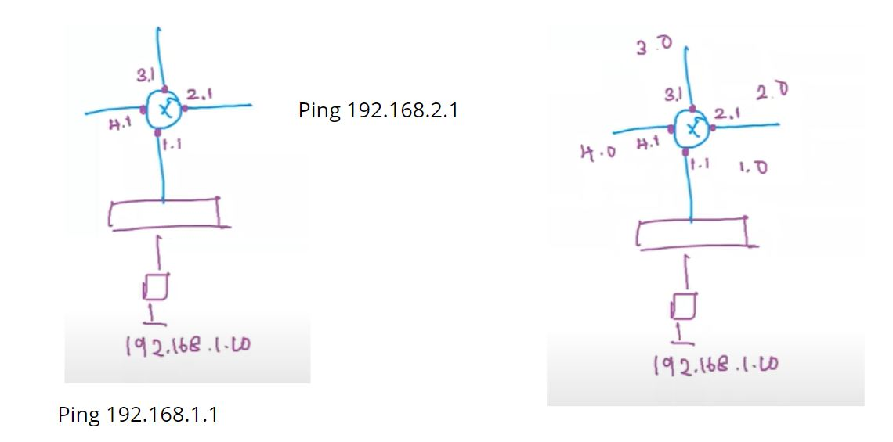
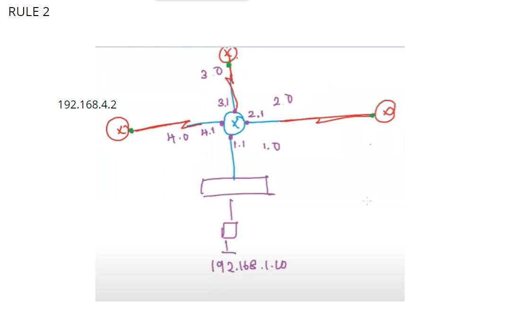

A router receives and sends data on computer networks. Routers are sometimes confused with network hubs, modems, or network switches. However, routers can combine the functions of these components, and connect with these devices, to improve Internet access
Ports of a router are classified on the basis of functionality
Interface Port- Used to connect the router with another devices (switch, router, pc).
Line Port - used to configure the router
Rule 1 : All interfaces of a router should be in different network or should have different NID.
Rule 2 : A serial interface connecting two router should be in same network or should have same NID.
Above Connection will appear like: